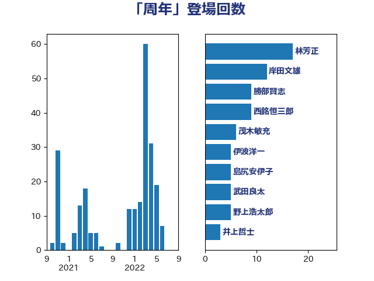

単語「周年」

| 林芳正 | 自由民主党 | 17 回 |
| 岸田文雄 | 自由民主党 | 12 回 |
| 勝部賢志 | 立憲民主党 | 9 回 |
| 西銘恒三郎 | 自由民主党 | 9 回 |
| 茂木敏充 | 自由民主党 | 6 回 |
| 伊波洋一 | 無所属 | 5 回 |
| 島尻安伊子 | 自由民主党 | 5 回 |
| 武田良太 | 自由民主党 | 5 回 |
| 野上浩太郎 | 自由民主党 | 5 回 |
| 井上哲士 | 日本共産党 | 3 回 |
| 古川禎久 | 自由民主党 | 3 回 |
| 大塚耕平 | 国民民主党 | 3 回 |
| 小渕優子 | 自由民主党 | 3 回 |
| 尾身朝子 | 自由民主党 | 3 回 |
| 杉本和巳 | 日本維新の会 | 3 回 |
| 神谷裕 | 立憲民主党 | 3 回 |
| 細田博之 | 自由民主党 | 3 回 |
| 羽田次郎 | 立憲民主党 | 3 回 |
| 進藤金日子 | 自由民主党 | 3 回 |
| 高橋光男 | 公明党 | 3 回 |
| 井上信治 | 自由民主党 | 2 回 |
| 吉川沙織 | 立憲民主党 | 2 回 |
| 安達澄 | 無所属 | 2 回 |
| 川田龍平 | 立憲民主党 | 2 回 |
| 斎藤アレックス | 国民民主党 | 2 回 |
| 末松信介 | 自由民主党 | 2 回 |
| 杉久武 | 公明党 | 2 回 |
| 田村憲久 | 自由民主党 | 2 回 |
| 石井啓一 | 公明党 | 2 回 |
| 石原正敬 | 自由民主党 | 2 回 |
| 石川博崇 | 公明党 | 2 回 |
| 福山哲郎 | 立憲民主党 | 2 回 |
| 秋葉賢也 | 自由民主党 | 2 回 |
| 芳賀道也 | 国民民主党 | 2 回 |
| 若松謙維 | 公明党 | 2 回 |
| 薗浦健太郎 | 自由民主党 | 2 回 |
| 足立敏之 | 自由民主党 | 2 回 |
| 近藤和也 | 立憲民主党 | 2 回 |
| 佐藤茂樹 | 公明党 | 1 回 |
| 古川康 | 自由民主党 | 1 回 |
| 古賀之士 | 立憲民主党 | 1 回 |
| 吉田久美子 | 公明党 | 1 回 |
| 和田有一朗 | 日本維新の会 | 1 回 |
| 国光あやの | 自由民主党 | 1 回 |
| 塩川鉄也 | 日本共産党 | 1 回 |
| 塩谷立 | 自由民主党 | 1 回 |
| 大口善徳 | 公明党 | 1 回 |
| 大野敬太郎 | 自由民主党 | 1 回 |
| 安江伸夫 | 公明党 | 1 回 |
| 宮内秀樹 | 自由民主党 | 1 回 |
| 宮本徹 | 日本共産党 | 1 回 |
| 山口俊一 | 自由民主党 | 1 回 |
| 山口那津男 | 公明党 | 1 回 |
| 山岸一生 | 立憲民主党 | 1 回 |
| 山田賢司 | 自由民主党 | 1 回 |
| 岸信夫 | 自由民主党 | 1 回 |
| 新垣邦男 | 立憲民主党 | 1 回 |
| 有村治子 | 自由民主党 | 1 回 |
| 杉田水脈 | 自由民主党 | 1 回 |
| 松沢成文 | 日本維新の会 | 1 回 |
| 柿沢未途 | 無所属 | 1 回 |
| 梅谷守 | 立憲民主党 | 1 回 |
| 榛葉賀津也 | 国民民主党 | 1 回 |
| 橘慶一郎 | 自由民主党 | 1 回 |
| 武井俊輔 | 自由民主党 | 1 回 |
| 比嘉奈津美 | 自由民主党 | 1 回 |
| 水岡俊一 | 立憲民主党 | 1 回 |
| 江藤拓 | 自由民主党 | 1 回 |
| 沢田良 | 日本維新の会 | 1 回 |
| 河野義博 | 公明党 | 1 回 |
| 津島淳 | 自由民主党 | 1 回 |
| 牧原秀樹 | 自由民主党 | 1 回 |
| 猪口邦子 | 自由民主党 | 1 回 |
| 田中健 | 国民民主党 | 1 回 |
| 石川大我 | 立憲民主党 | 1 回 |
| 石橋通宏 | 立憲民主党 | 1 回 |
| 福島みずほ | 社会民主党 | 1 回 |
| 穀田恵二 | 日本共産党 | 1 回 |
| 篠原豪 | 立憲民主党 | 1 回 |
| 簗和生 | 自由民主党 | 1 回 |
| 自見はなこ | 自由民主党 | 1 回 |
| 辻清人 | 自由民主党 | 1 回 |
| 長妻昭 | 立憲民主党 | 1 回 |
| 青木愛 | 立憲民主党 | 1 回 |